Support at the scale of a country
Disney+ Hotstar served more than 300 million monthly active users. The goal was a support platform that lets people solve problems themselves, or reach the right person when they can't, so customer satisfaction goes up and the support team's load comes down.
- Searches for "Hotstar contact"
- 2× Compared with "Netflix help", which had a dedicated portal. From Google Trends.
- Self-resolvable complaints
- 18.5–25% Of all weekly complaints.
- Complaints from subscribers
- 5× Paying subscribers complained almost five times as often as free users.
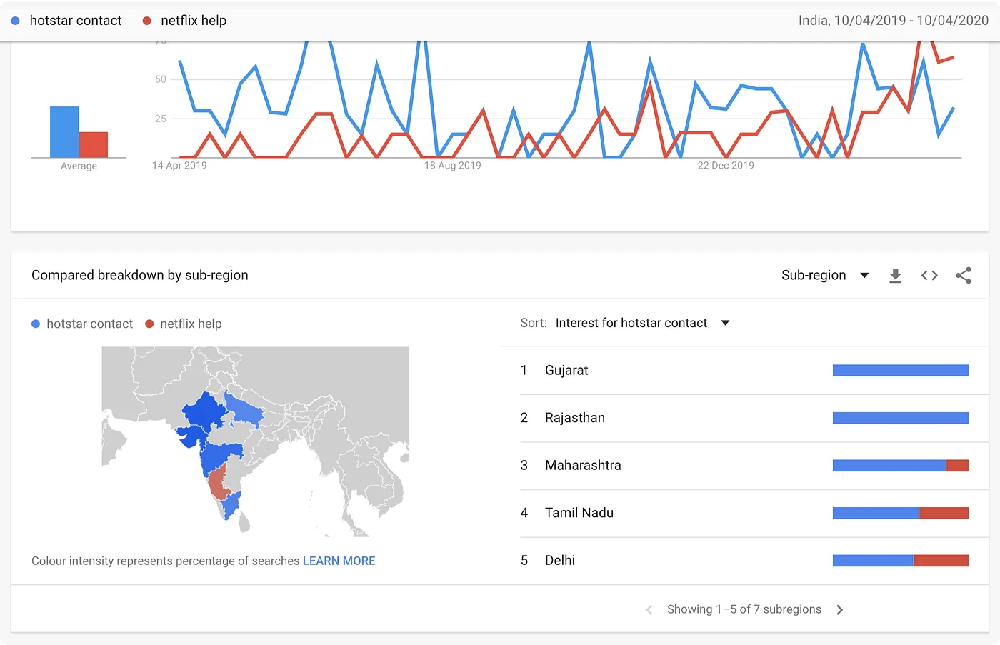
The people paying the most were the most stuck
We interviewed people who had raised complaints, and the support staff handling most of the weekly tickets.
They said it's possible that I subscribed from some other account whose details I forgot. I had to share my payment details and other credentials over email to get it activated.
Karan, 32, premium user
I asked them to send me the steps I needed to follow in written. They said they didn't have anything like that.
Krishna, 57, VIP user
I wanted to call customer support to ask why exactly this was happening but I couldn't find the number anywhere!
Jiya, 23, premium user
Most complaints are about users losing access to their accounts. We need certain documents to verify ownership, and due to lack of a proper structure, this leads to a lot of back and forth.
Vikram, support team
Many of them are bogus which makes it really difficult to attend to the genuine ones properly. Many of these issues have simple fixes that the user can perform themselves.
Tarun, support team
I have changed my phone number but my subscription is on my previous number. I couldn't find a way to change it on the app.
Raman, 33, premium user
One problem stood out. When Hotstar switched to phone-number login by default, many people who had signed up with an email and password didn't migrate. They accidentally created a new, free account, and were understandably angry when asked to pay again.1Why it matteredThese were paying customers, which is part of why subscribers raised five times as many complaints. Every lost account was a ticket that needed documents, manual checks and several emails.
Twelve categories, then four, then six
Before any interface, the help content itself needed restructuring. I grouped 12 categories into 4 broad segments, tested it with a card sort, and iterated to a 6-section structure with a "Top categories" drawer up front.
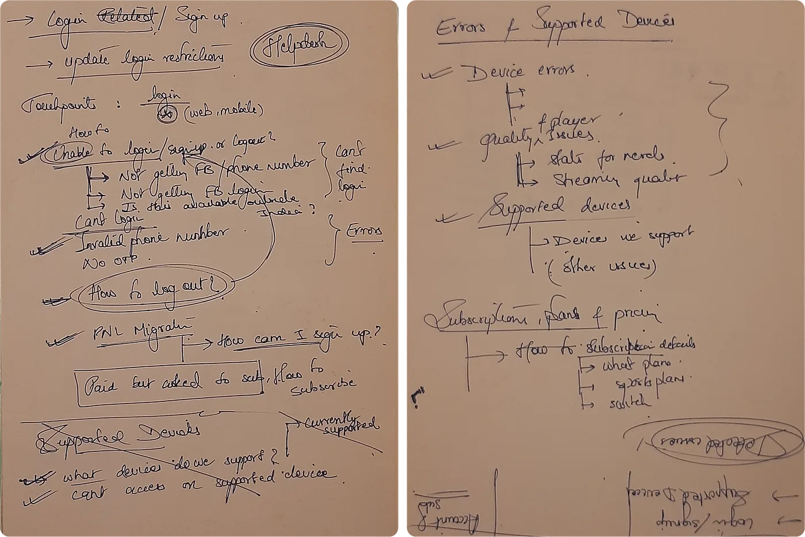
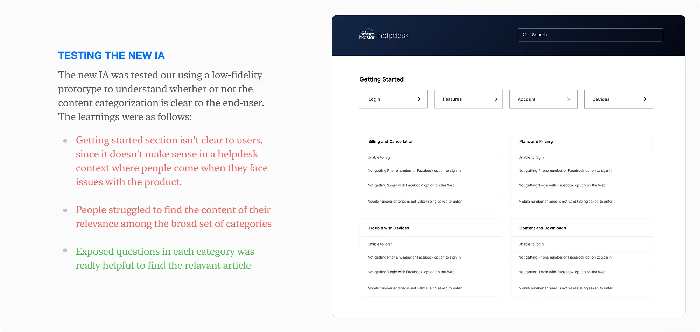
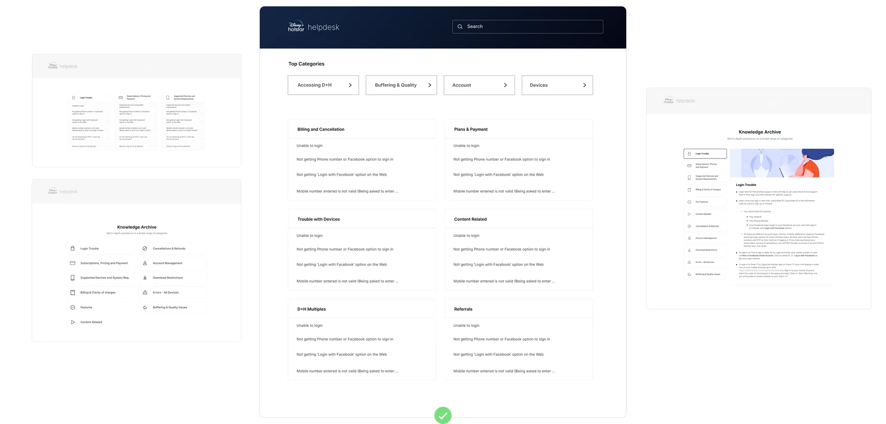
Meet people where the problem shows up
Type the error code
The search bar understands error codes. Enter "Error 102" and you get the exact troubleshooting article, with suggested queries right below the input.
Related articles and top queries
Similar guides and common questions at the bottom of results keep people in the self-help loop.
A lost-account portal
People submit verification documents themselves and recover their paid account without waiting on an agent.
Help links on error cards
When an error appears in the app, it links straight to the matching help article.
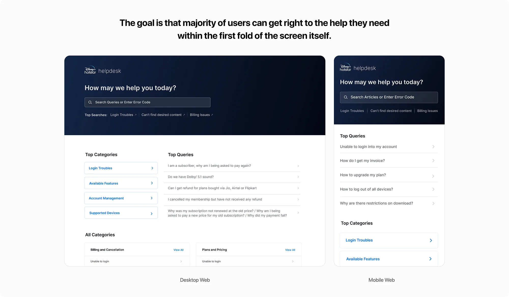
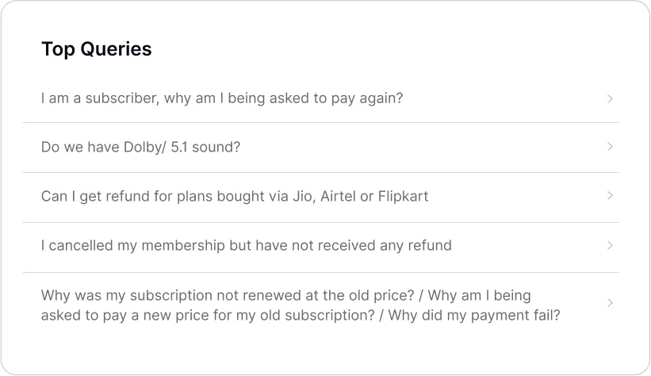
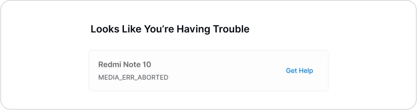
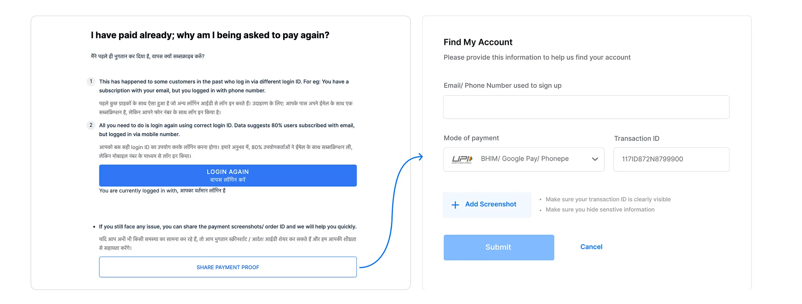
Make contacting support easy, but not the first thing you see
Hiding the contact options would have made people angrier; Jiya couldn't find the number at all. Putting them first would have flooded the team. The answer was a "Need more help?" funnel at the bottom of every article, so people read before they write.
WhatsApp or a call
Traffic is routed to WhatsApp for simple requests and to a phone call for complex ones.
Paid users get a phone line
Paying subscribers connect to phone support; free users raise email tickets. While someone types their issue, relevant articles appear alongside.
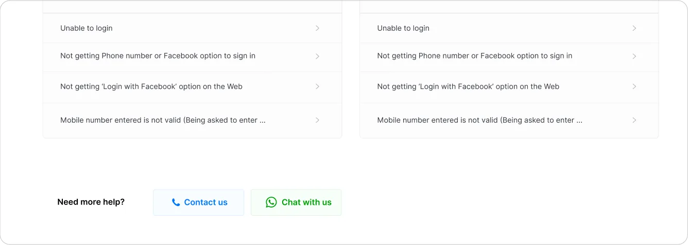
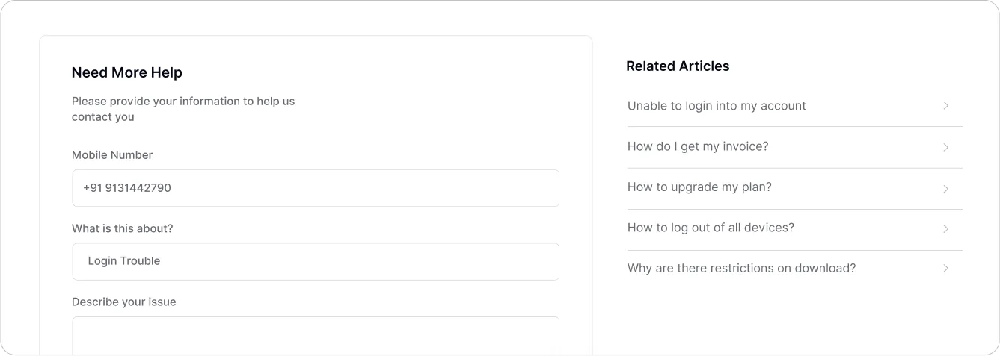
Designing for the agents too
Agents had to categorise every incoming ticket. I designed a progressive, segmented issue picker that narrows 125 options down to one without cluttering the screen.
We also found many people contacting support were from Tier 2 cities and preferred regional languages, so the help centre was fully localised into Indian regional languages.
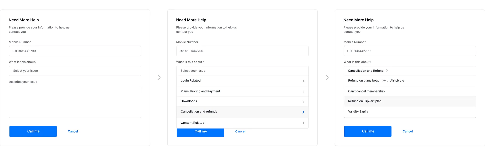
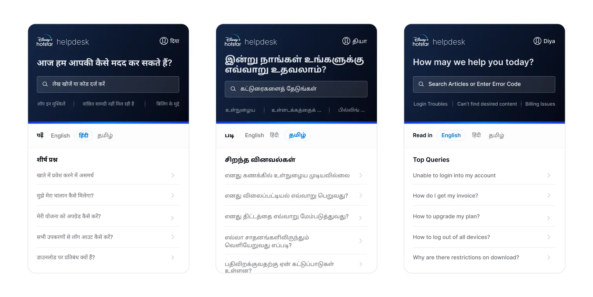
Happier customers, fewer tickets
- CSAT
- +15% Overall customer satisfaction.
- Lost-account tickets
- −36% "Find my account" complaints.
- Support load
- −9% Fewer tickets overall, from self-resolution.
What I'd keep, and what I'd change
Support staff are users too.
Some of the most useful interviews were with agents. They knew which problems were simple and which needed documents, and the issue picker came from designing for them, not around them.
Fix the cause, not only the queue.
The lost-account problem started with a login migration. A recovery portal cut those tickets by over a third, but the cheapest ticket is the one a product change prevents.
Bring the account-migration problem upstream sooner. The help centre handled the fallout well, but I'd push for the login team to own a migration path in the same quarter, so recovery becomes the exception, not a product.